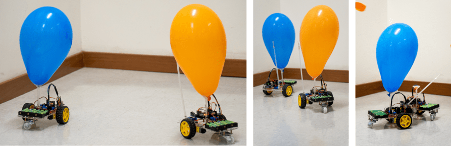
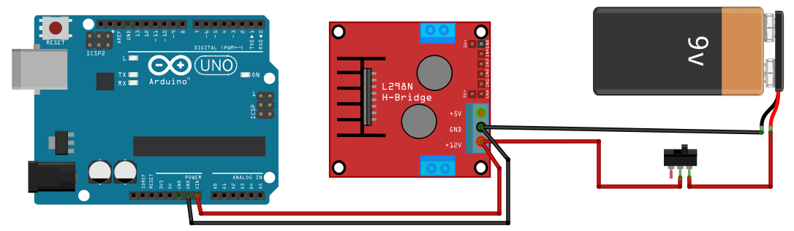
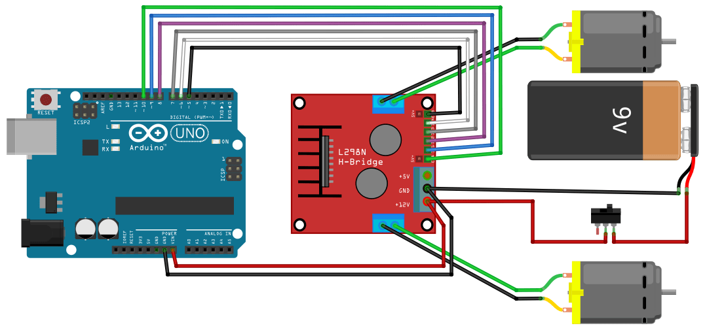
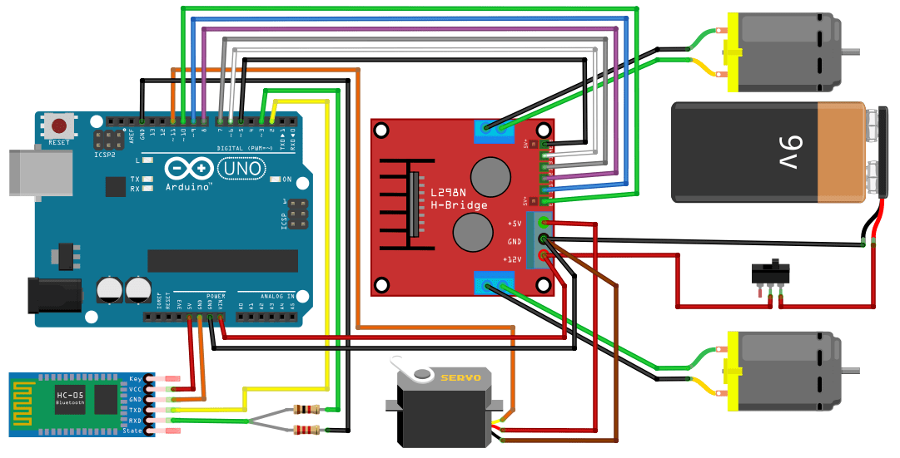

BattleBot Arduino - Monte o Robô de Combate Bluetooth (Estoura Balão)
Prepare-se para entrar na arena! 🚀 Neste tutorial completo você vai aprender passo a passo como montar o BattleBot Arduino, um robô de combate Bluetooth estilo “estoura balão”. Com Arduino, ponte H L298N, micro servo e um módulo Bluetooth, você vai construir um robô de combate incrível que também pode ser adaptado para outros projetos de robótica educacional como exploradores, resgatistas e muito mais.
👉 Tudo explicado de forma prática, divertida e detalhada: lista de materiais, planejamento, montagem elétrica, programação, conexão Bluetooth, código fonte e controle via aplicativo no celular.
No final, o seu robô estará pronto para a guerra dos balões. Que vença o melhor bot! ⚔️🎈
Passo 1 – Conheça o Projeto
Abrindo a arena! Neste vídeo você vai conhecer o robô de combate “estoura balão”, feito com Arduino e controlado por Bluetooth. Além de guerreiro, ele pode virar explorador, resgatista e até guarda de planta (sim, é versátil assim!).
Passo 2 - Lista de Materiais
Antes da batalha, precisamos do arsenal. No vídeo você confere todos os componentes necessários para montar seu robô de combate Arduino Bluetooth. Spoiler: não tem sabre de luz, mas quase!
Passo 3 - Planejamento da Montagem
Um bom guerreiro sempre planeja sua batalha! Neste passo você vai aprender a organizar e fixar o Arduino, a ponte H L298N, o módulo Bluetooth HC-06, o micro servo, a haste do balão e o suporte de pilhas no chassi robótico, garantindo que todos os componentes fiquem firmes e prontos para a montagem seguinte.
Passo 4 – Montagem Elétrica
Aqui você garante que o robô tenha energia para funcionar. O vídeo mostra como ligar o suporte de pilhas ao driver ponte H L298N e ao Arduino, distribuindo a alimentação de forma segura. Agora o robô já está “acordado”, mas ainda não se move.
Diagrama elétrico
Passo 5 - Ligando a Ponte H
Com a mecânica pronta e a energia ligada, chegou a hora de conectar a ponte H L298N ao Arduino e aos motores. Neste passo, você prepara tudo para que, no próximo passo, os comandos do código façam o robô se mover.
Diagrama elétrico
Passo 6 - Programação dos Movimentos
Chegou o momento de dar vida ao seu robô! Aqui você programa a ponte H no Arduino para controlar os motores e colocar o robô de combate em movimento pela primeira vez.
Passo 7 - A Arma Secreta
Todo combatente precisa de uma arma! Aqui você configura o micro servo no Arduino e monta a haste que vai estourar o balão inimigo.
Diagrama elétrico

Passo 8 - Conexão Bluetooth
Chegou a hora de dar comandos ao robô. Você vai conectar o módulo Bluetooth HC-06 ao Arduino e preparar o Arduino para receber comandos do celular. É tipo domar um droide de combate!
Diagrama elétrico
Passo 9 - Código Fonte
Aqui está o grimório secreto do projeto: bibliotecas e código fonte comentado, explicando cada detalhe de como o Arduino controla o robô de combate Bluetooth.
Passo 10 - Aplicativo de Controle
O toque final: instalar e configurar o aplicativo para controlar o robô. Agora é só entrar na arena e começar a guerra dos balões. Que vença o melhor bot!